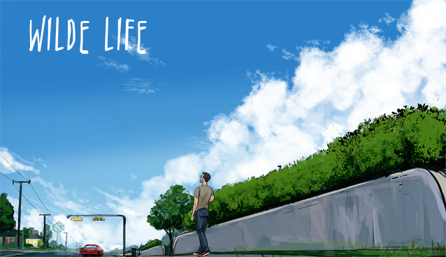

Home
About
Resume
Portfolio
Scratch Game
The Suffering Game

Description
: Fight through the ranks of Wonderland with heroes Magnus, Taako and Merle. Each enemy gets progressively harder.
Describe some programming concepts or structures you learned in this unit that you applied in your game.
Did you encounter any problems or struggles while working on this project? If you did, how did you solve or overcome them?
What aspects of your game do you like best?
If more time was given for you to work on your game, what would you improve or modify about your game?